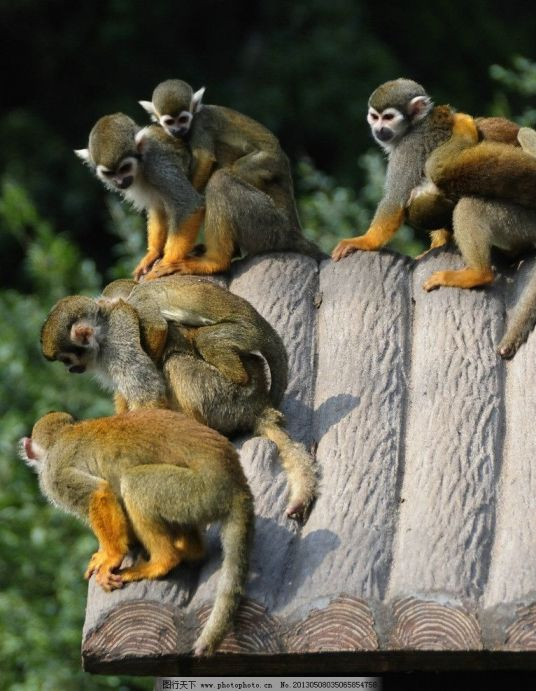
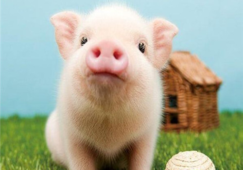
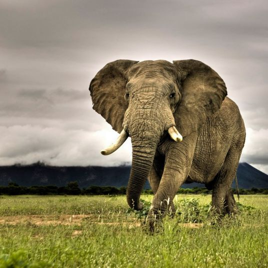
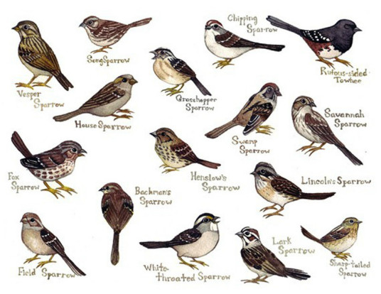

猴子
猴子是灵长目一些动物的俗称。整个灵长目动物因进化等级的差异可分为两大亚目——原猴亚目和类人猿亚目 ，又称为原猴类和猿猴类。
查看更多
猫
猫，属于猫科动物，是全世界家庭中较为广泛的宠物。家猫的祖先据推测是古埃及时期的沙漠猫，波斯的波斯猫，已经被人类驯化了3500年（但未像狗一样完全地被驯化）。

狗
狗（拉丁文Canis lupus familiaris）属于脊索动物门、脊椎动物亚门、哺乳纲、真兽亚纲、食肉目、裂脚亚目、犬科动物。中文亦称“犬”，狗分布于世界各地。

猪
猪（Pig、Swine）是一种脊椎动物、哺乳动物、家畜，也是古杂食类哺乳动物，主要分为家猪和野猪。当前人们认为猪是猪科动物的简称，猪依据品种的不同，体貌特征也各不相同

大象
大象很早就成了人类的朋友，并能为人类提供帮助。大象非常聪明，能开辟场地，还能把死去的同伴安埋在落叶枯枝之中。大象寿命很长，一般能活到70岁左右，它在10岁到15岁性成熟，怀孕期长达22个月。大象分布极广，大约在四千万年以前，除了大洋洲和南极洲以外，各洲都有它的足迹，然而现在主要有亚洲象和非洲象两大类。

麻雀
麻雀（Passer）：是雀科 [5] 麻雀属27种小型鸟类的统称。它们的大小、体色甚相近。一般上体呈棕、黑色的斑杂状，因而俗称麻雀。